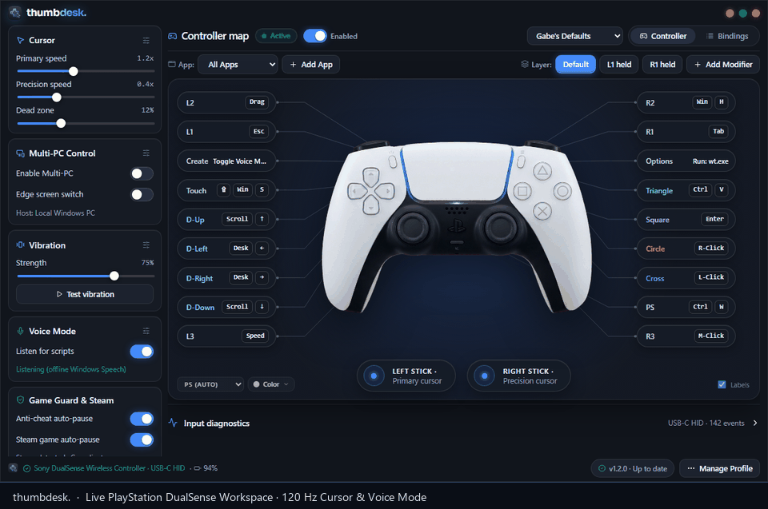

Control your entire Windows desktop from a game controller.
120 Hz dual-stick cursor physics, offline Voice Mode for any command or script, automatic Anti-Cheat & Steam game compliance, dual-motor haptics, and built-in SHA-256 auto-updates — in a single portable executable.


120 Hz Precision Cursor Physics
Primary & precision analog sticks with radial deadzone, exponential response curve, flick boost, acceleration, smoothing, and subpixel accumulation via Win32 SendInput.
Voice Mode & Custom Command Scripts
Bind any button or offline Windows Speech phrase to execute shell commands, PowerShell scripts, or .bat files silently with one-click testing.
Anti-Cheat Compliance & Steam Guard
Automatically pauses synthetic input whenever Riot Vanguard, Easy Anti-Cheat, BattlEye, or a Steam game is active — plus one-click Steam Input & Big Picture launchers.
Dynamic Xbox & PlayStation Hardware
Plug in or hot-swap DualSense, DualShock 4, or Xbox controllers and watch the 3D studio map, hotspots, labels, and 7-pattern dual-motor haptics adapt instantly.
Built-In Restart to Update
Quietly preloads new GitHub Releases in the background, verifies SHA-256 against SHA256SUMS.txt, and applies atomic self-updates via a custom studio installer.
Multi-PC LAN & Portable Profiles
Slide your cursor across a screen edge to another Windows PC over LAN TCP/UDP, with atomic JSON profiles and macOS GAPE.json auto-conversion.